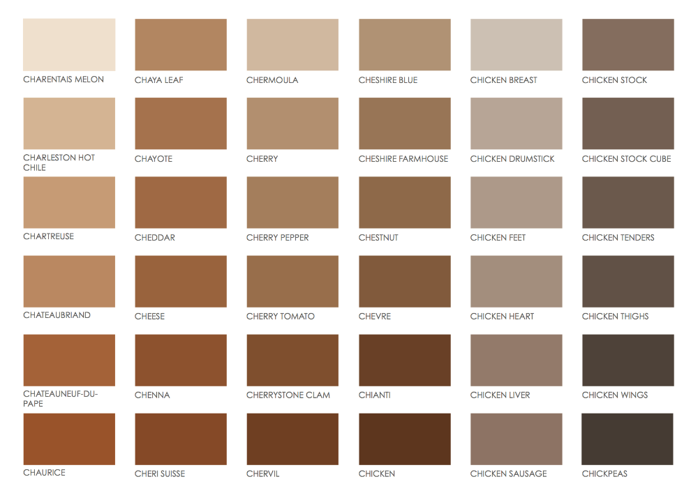
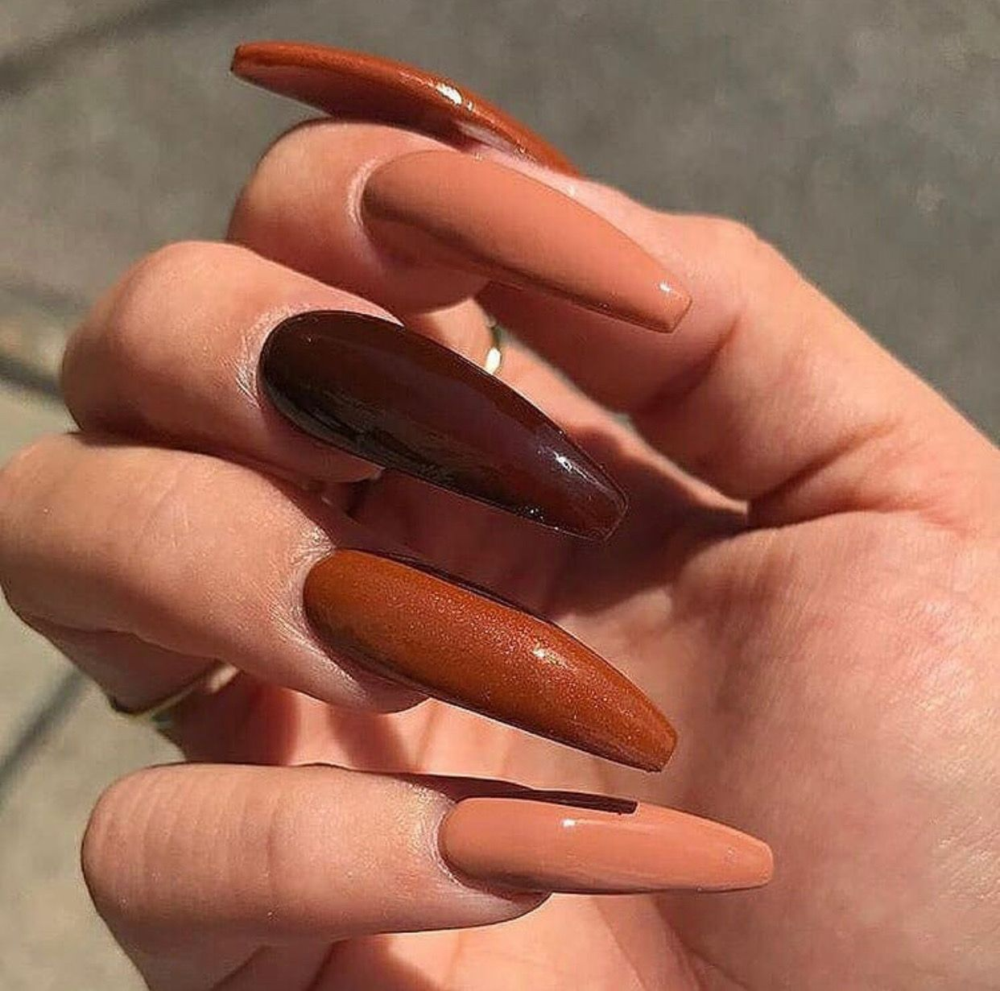
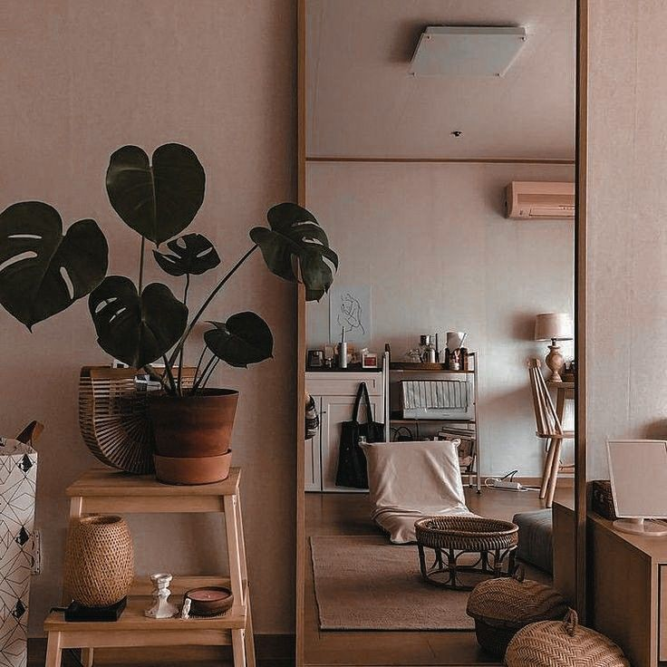
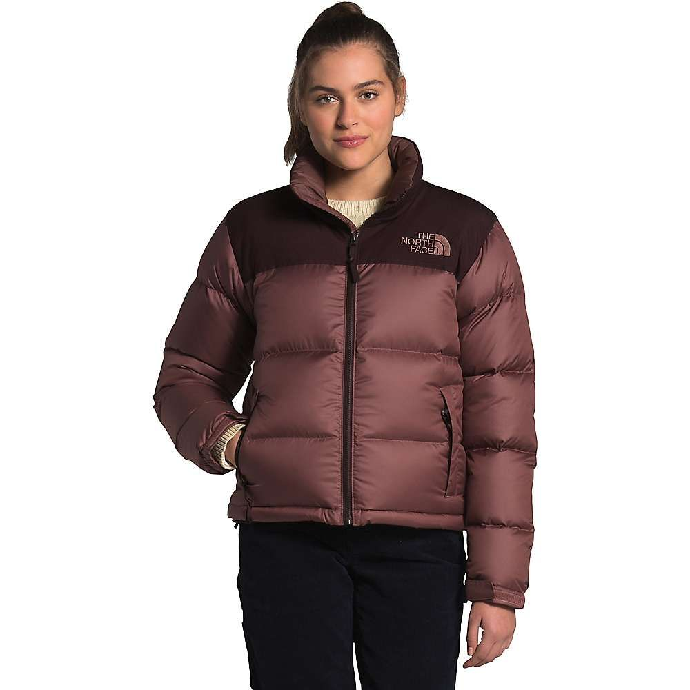
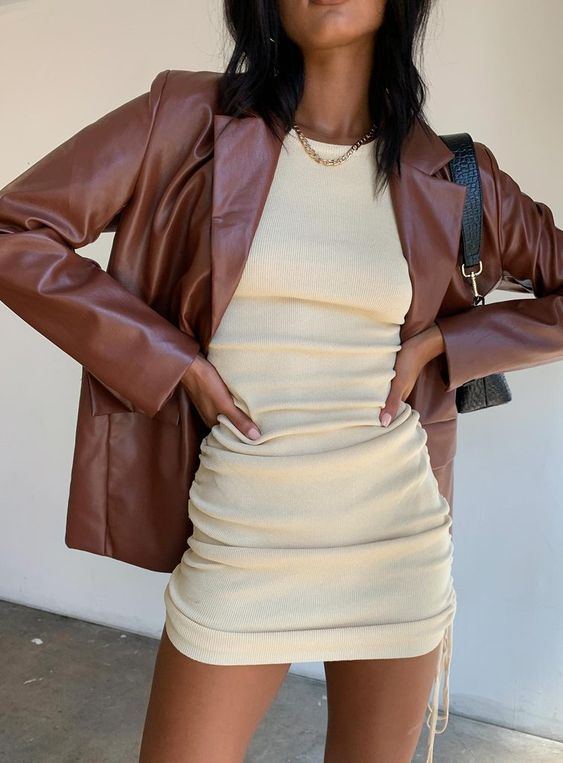
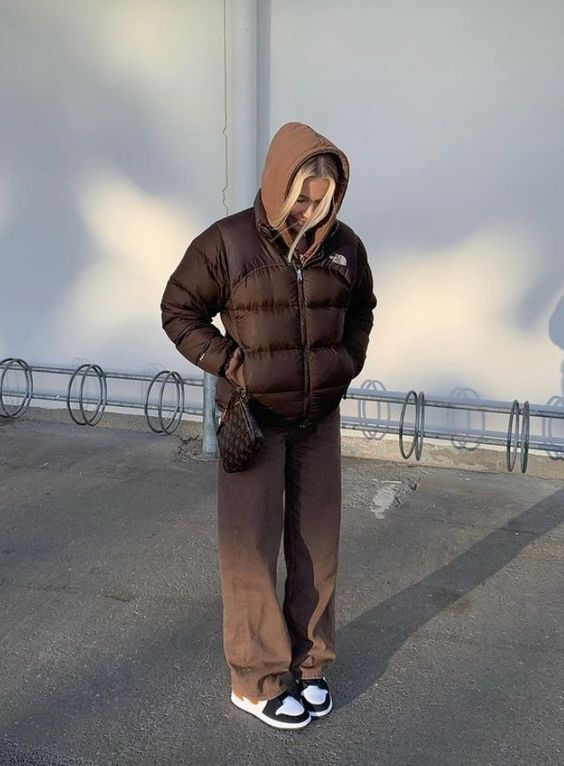
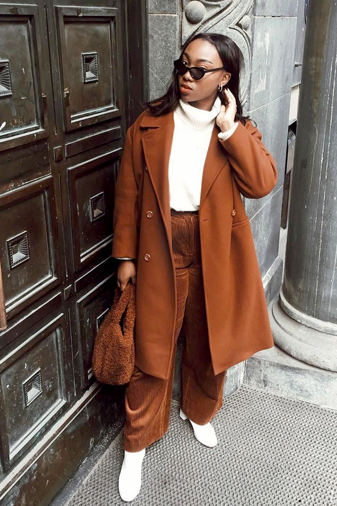
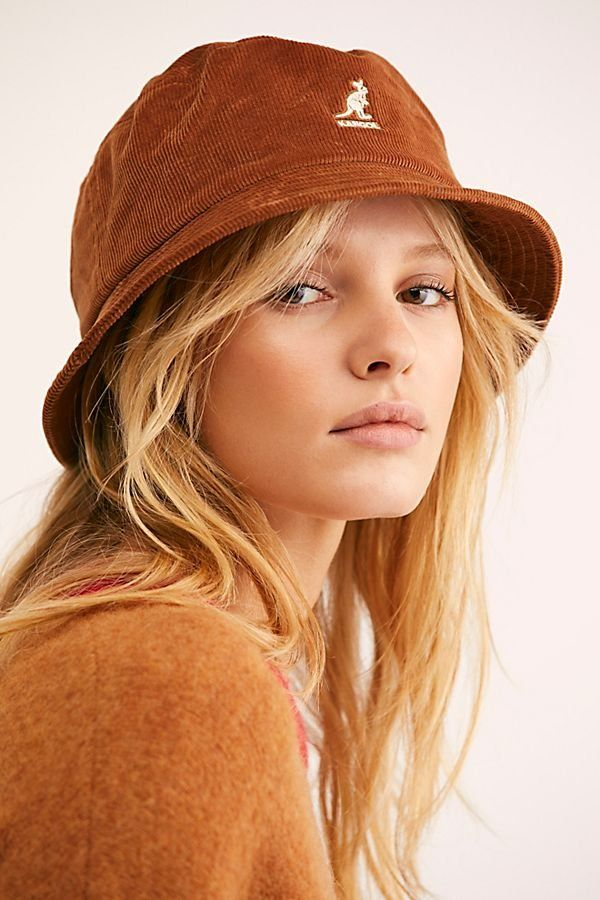
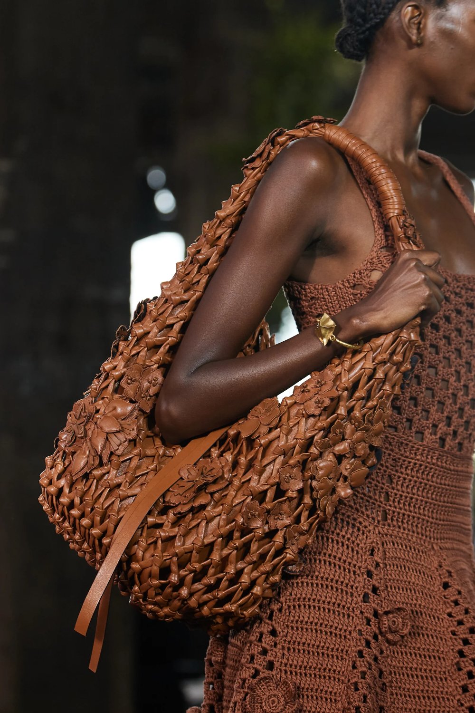

I, personally, did not initially understand the brown trend. I never really owned or wore a lot of brown, but quickly this trend has grown on me. Brown is a great neutral color and looks great when worn in a monochrome look with other shades of brown. The pictures below show many of the different shades of brown and how people are wearing and using them, including on nails, in rooms, and outfits.
Hover or tab on any image below to see it in full focus.








